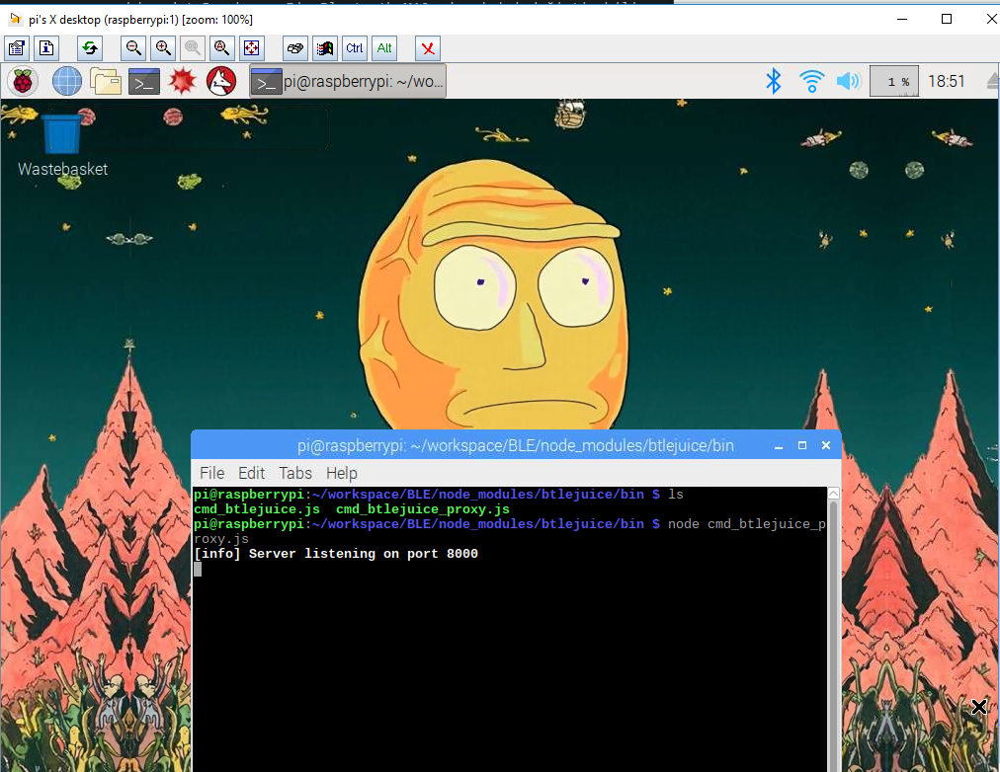
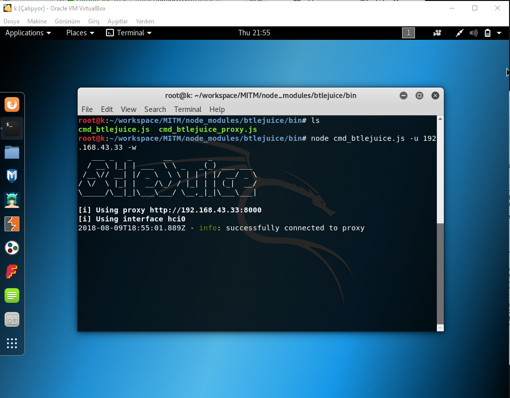
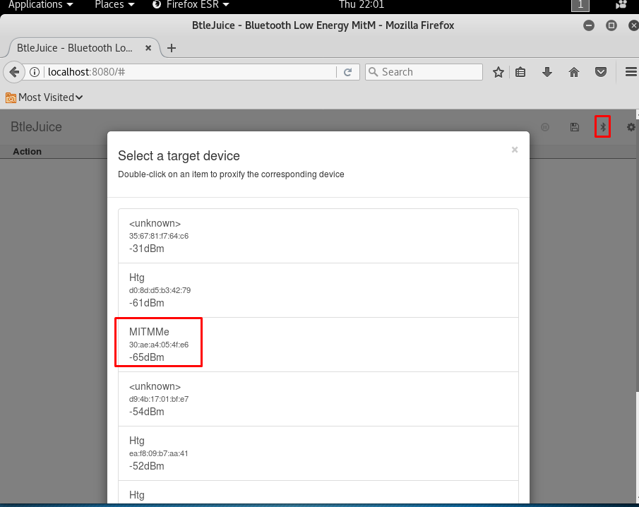
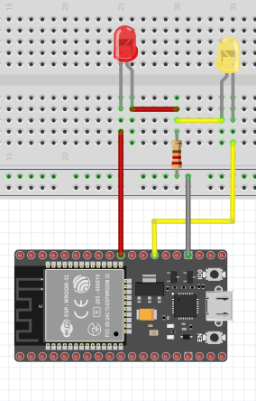
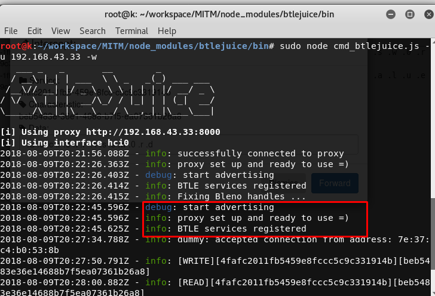
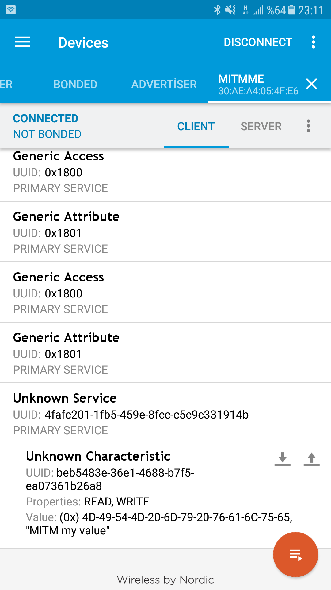
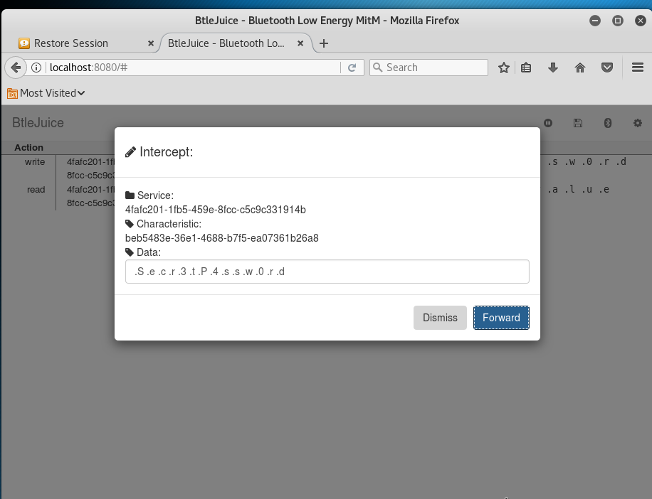

BLE'nin ABCsi : 2 - MITM
Serimizin ilk yazısında BLE’nin temellerini öğrendiğimize göre artık BLE kullanan cihazlara yapılabilecek saldırı tekniklerinden bahsebiliriz. Bir BLE cihazımız olsun. Bu cihazımızla genellikle mobil telefonlardaki veya bilgisayara yüklediğimiz uygulamalar ile konuşuruz.
- Android için telefonun kurduğu bağlantılardaki bluetooth trafiğini loglayabilmek için
Bluetooth HCI gözetleme günlüğüözelliğini açabilirsiniz. - IOS için bu işlem biraz zor. Araştırmama rağmen cihazdaki bluetooth trafiğini dumplayabilceğim bi araç bulamadım. Eğer bilen varsa yorum kısmını yeşillendirebilir. https://developer.apple.com/documentation/corebluetooth adresinden class isimlerini bulup, bu fonksiyonları Frida ile hooklayarak yarım bir başarı elde ettim ancak tatmin edici olmadı : frida
Android için bluetooth ve ble cihazlarla iletişim kurabileceğimiz, nRF Connect adında uygulama bulunmakta. Kurmanızı öneririm.
Bunların dışında yapabileceğimiz saldırı tekniklerini kabaca 3’e ayırabiliriz:
- Man in the middle (MITM)
- Sniffing
- Firmware dump
Ne için kullanacağımızı kısaca açıklarsak:
- MITM’ı BLE link layer’da encryption kullanmayan cihazlara karşı kullanacağız.
- Sniffing’i encryption yapmış cihazlara karşı kullanacağız.
- Firmware dump ile hedef cihazımızın kullandığı tüm kodları bulacağız. Özellikle gizli, dokumante edilmemiş özel kodları :)
Bu yazıda MITM, gelecek yazılarda da diğer teknikleri anlatmaya çalışacağım.
Her teknik için ufak ekipmanlar almamız gerekecek :)
MITM
Gereksinimler:
- ESP32 $12
- Raspberry Pi $50
- Bluetooth dongle $10
Bu teknik için 2 adet Bluetooth kullanan cihaza ihtiyacımız var. Kendi bilgisyarımız ve bir adet Raspberry Pi. Bluetooth MAC adresinizi değiştirebiliyorsanız dongle almanıza gerek yok. RPI lazım çünkü bir bilgisayarda iki adet bluetooth client’ı çalıştırmak neredeyse imkansız.
Temel olarak saldırı topolojimiz şu şekilde:

Hedef cihazımız raspberry pi’ye bağlandığı için advertisement yapmayacak. Biz de bundan faydalanıp o cihazmışız gibi advertisement yapıcaz. Kullanıcı hedef cihaza bağlandığını düşünerek bizim kurduğumuz sahte cihaza bağlanıcak.
Kali’de kurduğumuz sahte BLE, hedef cihazdaki tüm özelliklerin aynısını taşıyacak, hatta cihazla aynı MAC adresini de. Dışardan bakan biri için sahte cihazımız ve gerçek cihaz arasında bir fark olmayacak. Kullanıcının yolladığı tüm datayı kali’den raspberry pi’ye yollayacağız. Raspberry pi da gelen datayı hedef cihazımıza yollayacak. Hedef cihazdan dönen data da aynı şekilde kullanıcıya geri dönecek. Böylece kimse farkına varmadan aradan geçen tüm datayı inceleme fırsatını elde etmiş olacağız.
Tüm bu işlemleri yapan halihazırda geliştirilmiş 2 toolumuz bulunmakta. GATTacker ve btlejuice. GATTacker komple komut satırında çalışmakta. Btlejuice ise web arayüzünde çalışmakta. GATTacker’ı bir cihaz üstünde başarıyla kullandım. Ancak BLECTF için kullandığım ESP32’de işe yaramadı.
Btlejuice ise her iki cihazda da çalıştı. O yüzden bu yazıda btlejuice kullanacağız.
Raspberry
microSD kartıma raspian imajı atıp raspberry pi’yi ayağa kaldırdım. SSH ile bağlanabilmek için imajın içine boş bir txt dosyası koyup adını ssh yaptım. Raspberry pi’yi ethernet kablosu ile modeme bağlayıp, ip’sini bulduktan sonra ssh ile bağlandım. Default pi:raspberry credleri ile cihaza girdim. VNC server başlatıp, servera bağlandım. Raspberry pi’yi proxy olarak kullanacağız. Bir klasor oluşturup sudo npm install -g btlejuice ile btlejuice’i yükledim. (eğer npmde sıkıntı yaşarsanız npm 8 kurun şu linkten)
Proxy’i node node_modules/btlejuice/bin/cmd_btlejuice_proxy.js ile başlatıyoruz.

Kali
Kalide de aynı şekilde btlejuice’i kurup bu sefer sudo node node_modules/btlejuice/bin/cmd_btlejuice.js -u <Raspberry IP address> -w komutunu çalıştırıyoruz.

Ardından kali’de browser açıp localhost:8080’e gidiyoruz. Sağ üstten bluetooth işaretine bastığımızda cihazları şekilde listeliyorsa işlem tamam demektir. İşaretlediğim cihaz ayarlayacağımız ESP32mizin ismi olacak.

ESP32
Önceki yazıda kullandığım ESP32’ye yeni kod yükleyip, ufak bir sistem kurdum. Bu sefer kod yüklemek için Arduino IDE kullandım. ESP32’nin c kütüphanesini cpp’ye aktarıp Arduinoya geçirmiş abilerimiz. Arduino’ya esp32 kütüphanelerini eklemek için şu linki takip edebilirsiniz.
Kod olarak şunu kullandım.1
2
3
4
5
6
7
8
9
10
11
12
13
14
15
16
17
18
19
20
21
22
23
24
25
26
27
28
29
30
31
32
33
34
35
36
37
38
39
40
41
42
43
44
45
class MyCallbacks: public BLECharacteristicCallbacks {
void onWrite(BLECharacteristic *pCharacteristic) {
std::string value = pCharacteristic->getValue();
if (value.length() > 0) {
int ledPin;
if(value == "Secr3tP4ssw0rd") ledPin = 4;
else ledPin = 5;
digitalWrite (ledPin, HIGH);
delay(500);
digitalWrite (ledPin, LOW);
}
pCharacteristic->setValue("MITM my value");
}
};
void setup() {
Serial.begin(9400);
pinMode (5, OUTPUT);
pinMode (4, OUTPUT);
BLEDevice::init("MITMMe");
BLEServer *pServer = BLEDevice::createServer();
BLEService *pService = pServer->createService(SERVICE_UUID);
BLECharacteristic *pCharacteristic = pService->createCharacteristic(
CHARACTERISTIC_UUID,
BLECharacteristic::PROPERTY_READ |
BLECharacteristic::PROPERTY_WRITE
);
pCharacteristic->setCallbacks(new MyCallbacks());
pCharacteristic->setValue("MITM my value");
pService->start();
BLEAdvertising *pAdvertising = pServer->getAdvertising();
pAdvertising->start();
}
void loop() {
delay(2000);
}
Kodumuz karakteristiğimize şifre olarak Secr3tP4ssw0rd gönderdiğimizde 4 numaralı pini, farklı bir şifre gönderdiğimizde 5 numaralı pini 500 milisaniye boyunca yakmakta. Arduino IDE ile esp32mize kodu yüklüyoruz.
Devre şemamızda şu şekilde :

Devreyi de kurduktan sonra geriye datayı intercept etmek kalıyor :)
ATIL KURT
Tüm setup’ı kurduktan sonra btlejuice arayüzünde en sağdaki seçeneğe tıklayıp tikleri kaldırın yoksa handlelarımızı karıştırıyor biraz. Ardından bluetooth işaretine tıklayın. Komut satırımızda şunları gördüyseniz tamamdır.

Eğer tikleri kaldırmazsanız işaretlediğim yer yerine bi üst infodaki Fixing Bleno handles mesajını görürsünüz ve nRF Connect tüm handleları göremez.
Ardından telefonunzdan nrf connect uygulamasını açıp MITMME cihazına bağlanının.

Şimdi handle’ımıza yanlış şifre girip kırmızı ışığın yandığını görün. Bir de doğru şifreyi yollayıp sarı ışığı yakın.
Son olarakta btljuice arayüzüne baktığınızda karşınızda gönderdiğiniz dataları görüceksiniz :)

Giden datayı intercept edebiliriz. Doğru şifre girildiği halde bunu yanlışa çevirebiliriz.

Real life örneklerden biri : https://blog.attify.com/btlejuice-mitm-attack-smart-bulb/
Serinin bir sonraki yazısında pairing’i pin ile yapacağız. Link layerimizi encrypt edip bu trafiğe saldırmayı deneyeceğiz. Görüşmek üzere :)